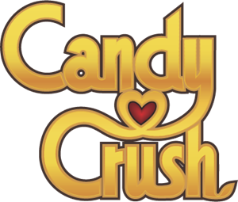

Players have spent 72 billion hours/ 8.3 million years playing this game since lauch in 2012
though it may be a suprise that such a colorful and energetic game would have any controversies however Candy Crush has its own handful of tensions. Candy Crush has had its troubles with trade marking through out the years. On january 2013 King filed for applications for trademarks on the word " candy". Since the word "candy" is fairly common for games,game developers were rather concerned about this advancement. Soon Candy Crush gained massive amounts of players. It was a highly addictive game as it uses a compulsion loop. The game had reached such a huge audience of younger users, it was Investegated by the UK Office of Fair Trading for exploitative game mechanics. Candy Crush is one of the top grossing games of all time however some people still do not like it. The game received negative attention after windows agreed to have it automatically installed on certain products.
The game has more than 132 million monthly users. In other words, one tenth of the 1.15 billion people on Facebook are connected to the app. By comparison, the population of the United States is about 314 million.